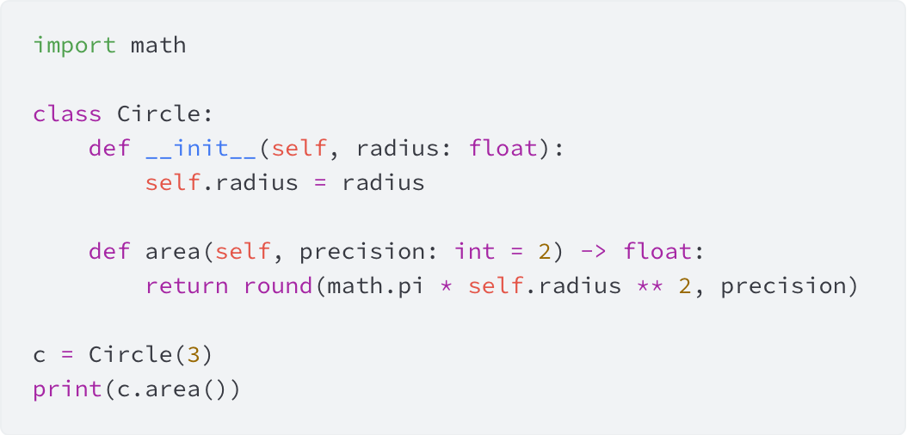
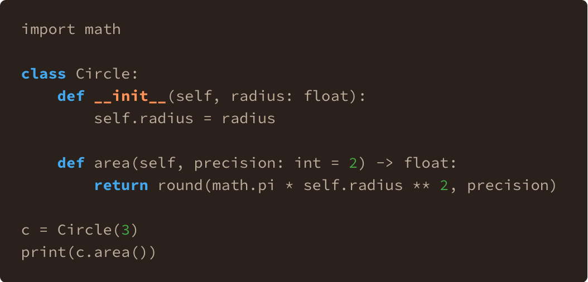
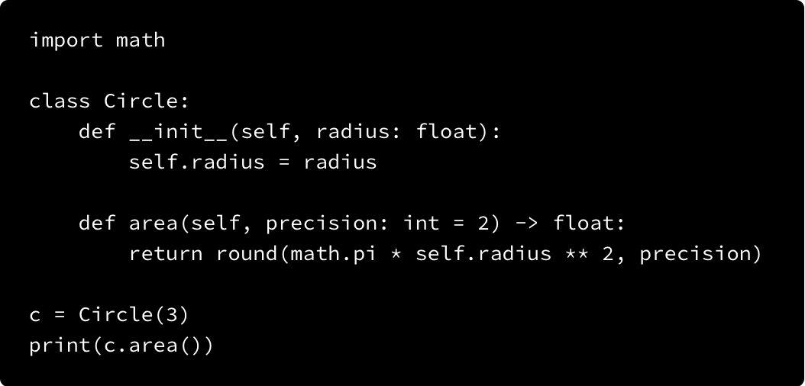

Complete Quarto Syntax Highlighting A Preview of All Styles (Light & Dark Mode)
My Journey to the Perfect Preview
Discover and preview every syntax highlighting style available in Quarto. This guide includes a full gallery and the Python scripts used to create it.
quarto syntax highlighting, quarto code styles
Style Previews
The list of styles is copied from HTML Code Blocks on 2025/08/25.
A11Y
A11Y Dark
Arrow
Atom One

Ayu

Ayu Dark
Breeze
Breezedark
Dracula
Espresso

Github
Github Dark
Gruvbox
Gruvbox Dark
Haddock
Kate
Monochrome
Monochrome Dark

Monokai
Nord
Oblivion
Printing
Pygments
Radical
Solarized
Tango
Vim Dark
Zenburn
The Process
Since I couldn’t find a website that previewed all of Quarto’s syntax highlighting styles, I decided to make my own. My first thought was to create a separate file for each style, then include them all in a master document. Unfortunately, this didn’t work—the master document’s highlight-style setting overwrites any included files. So, I had to find a different solution.
Here’s a step-by-step breakdown of my approach.
Step 1: Set Up the Project
First, I created a directory called highlight_styles. Inside, I made a code-snippet.qmd file to hold the code I wanted to preview. Using a separate file for the code block is a great trick because it lets you easily switch out the preview code anytime without editing dozens of individual style files.
code-snippet.qmd
```python
import math
class Circle:
def __init__(self, radius: float):
self.radius = radius
def area(self, precision: int = 2) -> float:
return round(math.pi * self.radius ** 2, precision)
c = Circle(3)
print(c.area())
```Step 2: Generate Individual Style Files
Next, I wrote a Python script to automate the file creation. The script loops through the list of styles from the Quarto webpage and creates a separate .qmd file for each one. Each file includes a highlight-style document header and uses a div with the id #snip to embed the code from code-snippet.qmd. This id is crucial for the next step!
STYLE_NAME.qmd
---
highlight-style: STYLE_NAME
---
::: {#snip}
{{< include highlight-styles/code-snippets.qmd >}}
:::I wasn’t sure which styles have a dark mode version, so I added -dark to every style and ran the script. This gave me a total of 46 files (23 styles with both a light and dark version). Since syntax highlighting only shows up in rendered HTML, I rendered the entire highlight-styles folder.
create-qmd.py
from pathlib import Path
styles = [
"a11y",
"arrow",
"atom-one",
"ayu",
"breeze",
"breezedark",
"dracula",
"espresso",
"github",
"gruvbox",
"haddock",
"kate",
"monochrome",
"monokai",
"nord",
"oblivion",
"printing",
"pygments",
"radical",
"solarized",
"tango",
"vim-dark",
"zenburn",
]
project_dir = Path.cwd()
for style in styles:
content = [
"---",
f"highlight-style: {style}",
"---",
"",
"::: {#snip}",
"",
r"{{< include highlight-styles/code-snippets.qmd >}}",
"",
":::",
]
with open(project_dir.joinpath(f"{style}.qmd"), "w") as f:
f.write("\n".join(content))
# DARK MODE
with open(project_dir.joinpath(f"{style}-dark.qmd"), "w") as f:
f.write("\n".join(content).replace(style, f"{style}-dark"))
print(f"Created {style}.qmd")Step 3: Screenshot All the Things!
Now I had 46 rendered HTML files that needed to be turned into images. Since I‚Äôm not a particularly patient person, I used Selenium to automate the process. It‚Äôs been a while since I used Selenium, and I was pleasantly surprised by how well it works with Safari. üçé
The script iterates through the directory of HTML files, opens each one, finds the element with the snip ID, takes a screenshot of just that element, and saves it as a PNG. It also prints a neat confirmation message after each screenshot, because good logging is always a plus!
screenshot.py
from pathlib import Path
from selenium import webdriver
from time import sleep
class ScreenshotTaker:
def __init__(self):
self.driver = webdriver.Safari()
def take_screenshot(self, url: str | Path, output_path: str | Path) -> None:
self.driver.get(url)
self.driver.find_element("id", "snip").screenshot(str(output_path))
sleep(1)
return None
def close(self):
self.driver.quit()
if __name__ == "__main__":
rendered_dir = Path("_site/highlight-styles")
shot_dir = Path("highlight-styles")
html_files = rendered_dir.glob("*.html")
shot = ScreenshotTaker()
for f in html_files:
if f.name.startswith("code-snippets"):
continue
if f.name.startswith("a11"):
continue
shot.take_screenshot(
f"file://{f.absolute()}", shot_dir.joinpath(f.stem + ".png")
)
print(f"✅ Saved {f.stem}.png")
shot.close()The rendered HTML files are saved by default in the _site directory. Since this folder gets overwritten during the rendering process, I saved the screenshots in the main highlight-styles folder alongside the .qmd files. This left me with 46 .qmd files and 46 .png files. I did a quick check, and if a dark version was identical to its light counterpart (for example, if nord-dark.png looked the same as nord.png), I deleted the duplicate files to keep things clean.
Step 4: Putting It All Together
The final step was to create this overview document. I wrote a small script that iterates through all the .png files I’d just created. For each file, it generates a level-3 heading with the style name and an image tag pointing to the screenshot. I also added a .screenshot class to the image tag so I could apply some custom CSS to the images.
from pathlib import Path
shot_dir = Path("highlight-styles")
names = []
for f in shot_dir.glob("*.png"):
names.append(f.name.removesuffix(".png"))
cont = []
for n in sorted(names):
cont.append(f"""### {n.replace("-", " ").title()}
{{.screenshot}}""")
print("\n\n".join(cont))